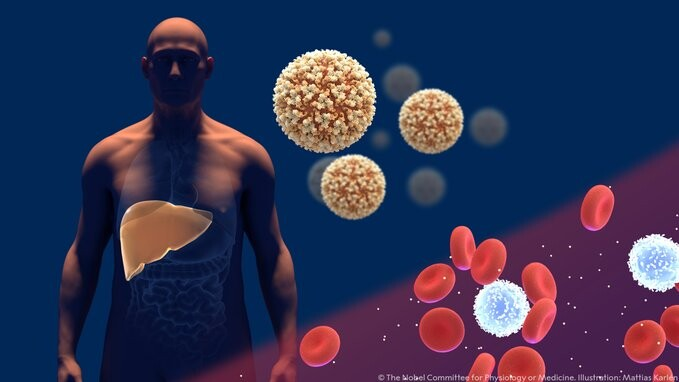
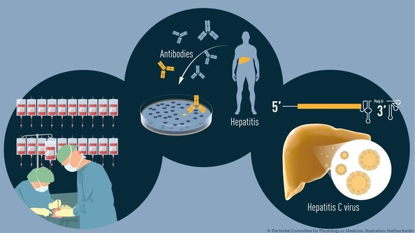

Por qué descubrir el virus de la Hepatitis C se merece un Nobel de Medicina: Alter, Houghton y Rice ganan el de 2020
Harvey J. Alter, Michael Houghton y Charles M. Rice se llevan el Premio Nobel de Medicina y Fisiología de 2020 por el descubrimiento del virus de la Hepatitis C, un virus que hoy por hoy afecta a 170 millones de personas y que durante décadas se estuvimos expandiendo a través de las transfusiones de sangre.
Un año más, como casi todos desde hace un siglo, el Instituto Karolinska de Suecia acaba de dar el pistoletazo de salida a la semana de los Nobels: la popular búsqueda de los científicos, activistas y escritores más significativos del planeta.
El descubrimiento del virus de la Hepatitis C, explicado en un minuto
"Este año el Premio Nobel se otorga a tres científicos que han realizado una contribución decisiva a la lucha contra la hepatitis de transmisión sanguínea, un importante problema de salud mundial que causa cirrosis y cáncer de hígado en personas de todo el mundo", con estas palabras el comité del premio explicaba el motivo central por el que se les concede a Alter, Houghton y Rice.
Por un lado, Alter demostró que un virus desconocido era una causa bastante común de la hepatitis crónica. Houghton usó una estrategia nueva para aislar el virus y RIce consiguió aportar la primera evidencia de que el virus identificado por Houghton era el que producía la hepatitis tal y como había señalado Alter. Un trabajo en equipo que ha tenido un importantísimo efecto a nivel mundial.
Un mal año, por ahora, para las predicciones
Más que con ningún otro premio científico, los días previos a los Nobels las apuestas, quinielas y predicciones están en efervescencia. De hecho, desde hace años, varias organizaciones se dedican a hacer públicos sus favoritos las semanas previas a los premios. Uno de los clásicos es la sociedad Sigma Xi que este año vuelve a apostar por Mary-Claire King, cuyo trabajo ha sido fundamental en la genética contemporánea. A ella le debemos la confirmación de que humanos y chimpancés compartimos el 99% del ADN y, también, el descubrimiento del BRCA1, el conocido como "gen del cáncer de mama", ha tenido un impacto crucial en la medicina de las últimas décadas. Por si fuera poco, su trabajo ha tenido tanta importancia social que, como nos recordaba Ángela Bernardo el año pasado, algunos la han señalado como candidata para el Nobel de la Paz.
Sigma Xi tiene más candidatos: Arthur I. Horwich y Franz-Ulrich Hartl por el descubrimiento del papel de las chaperonas en el plegado de proteínas; Samir Mitragotri por sus innovaciones en el campo de la administración de fármacos y el uso de biomateriales para ello; y Charles David Allis por sus trabajos en el campo de la epigenética y los mecanismos regulatorios de la expresión genética.
Por otro lado, Clarivate Analytics utilizando criterios cuantitativos (como el número de citas) ha propuesto como posibles ganadores a Pamela J. Bjorkman y Jack L. Strominger por determinar la estructura y función de las proteínas del complejo principal de histocompatibilidad (CPH) que ha contribuido al desarrollo de fármacos y vacunas; Huda Y. Zoghbi por sus descubrimientos sobre la patogenia de trastornos neurológicos, entre ellos los orígenes genéticos del síndrome de Rett; y Yusuke Nakamura por su investigación pionera en el desarrollo y aplicación de marcadores genéticos polimórficos y por sus contribuciones a estudios de asociación de todo el genoma algo que ha resultado fundamental en los nuevos tratamientos contra el cáncer.